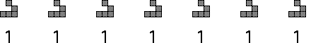
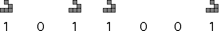

|  |
|  |
| A stream of equally spaced gliders can be viewed as a string of 1s. | |||
| Removing some gliders from a stream of equally spaced gliders can be viewed as a string of 1s and 0s. | |||
| |||
| In this way, streams of gliders can transmit information. |
Return to Life.